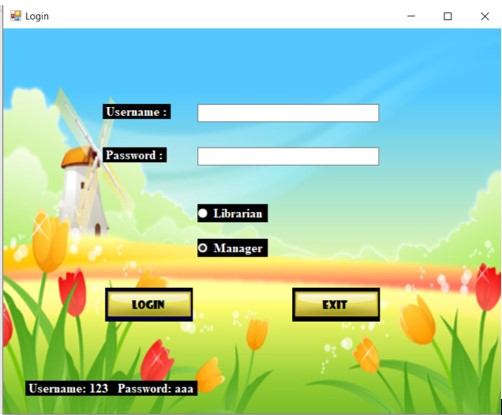
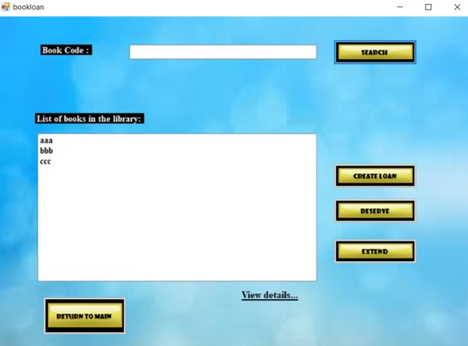
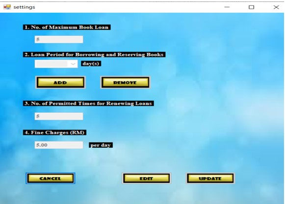

Project 1
Library Management System

One of the earliest full-fledge software systems that have been developed by me is this library management system which is also one of my academic projects done during my diploma. Developing this system has introduced me with various important concepts such as the flow of the program and the creation of DFD Diagrams which is significant for project development.The library system developed is for two different types of users which are the librarian and the customers. The library system is developed through the use of Visual Basic to create the application forms which serves as an interface for the users. The library system is able to perform basic functions which is to borrow and return books as well as for setting the library rules and policies for the librarian. The management system also consisted of database which done through Microsoft Access to store all the book and user information to simulate a real library experience. Some of the features are demonstrated as shown in the following.
One of the features implemented would be the login page which allows the user to identify as librarian or a customer. For testing purposes, an example username and password was shown at the interface for easy access. The librarian will have an extra feature which is to set the rules for the library.
The main feature for this library management system would be the book loan and returning system which allows users to borrow library books. The interface will display a list of books available in the library and show their status to the users. It also have a search bar which makes book finding easier from a large database of books.
Another important feature which is exclusive for the librarian users is that it has a system which can adjust the rules and policies of the library such as allowing the number of books to be borrowed per users or the fines for late return of the books. This is to further enhance and add flexibility to the system.